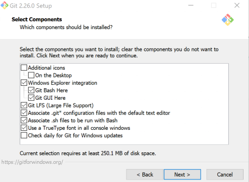

Introduction
Bash is the shell, or command language interpreter, for the GNU operating system. The name is an acronym for the ‘Bourne-Again SHell’, a pun on Stephen Bourne, the author of the direct ancestor of the current Unix shell sh, which appeared in the Seventh Edition Bell Labs Research version of Unix. Bash is largely compatible with sh and incorporates useful features from the Korn shell ksh and the C shell csh. It is intended to be a conformant implementation of the IEEE POSIX Shell and Tools portion of the IEEE POSIX specification (IEEE Standard 1003.1). It offers functional improvements over sh for both interactive and programming use. While the GNU operating system provides other shells, including a version of csh, Bash is the default shell. Like other GNU software, Bash is quite portable. It currently runs on nearly every version of Unix and a few other operating systems - independently-supported ports exist for MS-DOS, OS/2, and Windows platforms.
The improvements offered by Bash include:
- Command line editing
- Unlimited size command history
- Job Control
- Shell Functions and Aliases
- Indexed arrays of unlimited size
- Integer arithmetic in any base from two to sixty-four
Download
There are many ways to install bash. A couple options are as following:
GNU
Bash can be found on the main GNU ftp server: http://ftp.gnu.org/gnu/bash/ (via HTTP) and ftp://ftp.gnu.org/gnu/bash/ (via FTP). It can also be found on the GNU mirrors; please use a mirror if possible.
Click here for more details
Install with Git
You can get bash on windows by installing GIT. This might be the easiest approach for developers using Windows. During the install, choose Windows Explorer integration:

VS Code
Check out this: https://stackoverflow.com/questions/42606837/how-do-i-use-bash-on-windows-from-the-visual-studio-code-integrated-terminal